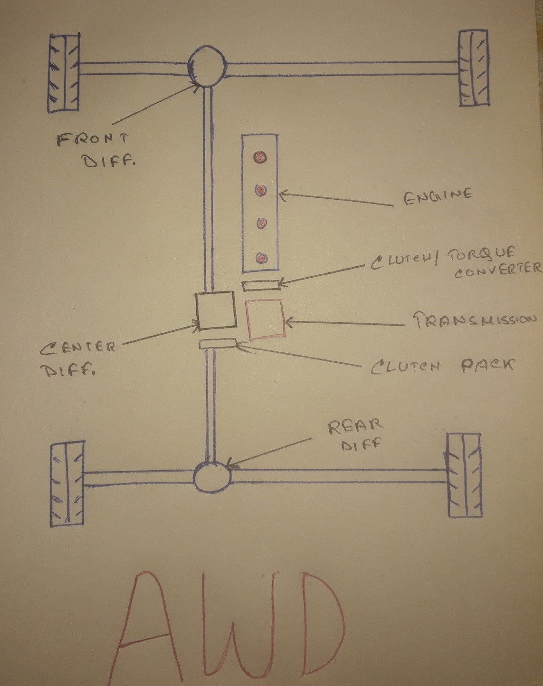
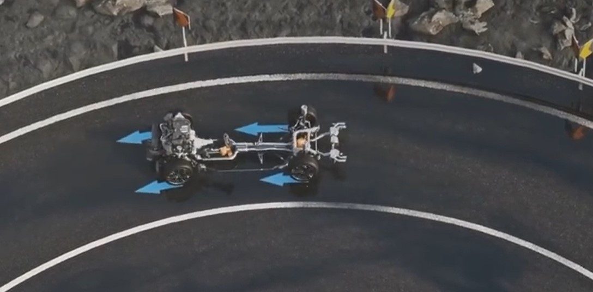

If we roll back a few years, people had very narrow options when it came to choosing a car with 4 driven wheels. It was mainly centered at trucks or large SUVs. In India, one such car was Maruti Suzuki Gypsy.
But fast forward to 2020 and choosing a car with 4 driven wheels is nothing less than a headache with so many good options in the market. Statistics show that almost 45% of the cars sold in the States are equipped with either AWD or 4WD.
These two terms will probably mean the same to most of my readers and it’s not a surprise. Even many car companies consider them as same but different marketing terms. After BMW released its M5 which has 4WD, I checked their UK website and this is what they:
But various car experts say that though these two systems are quite same, there are few factors where these two differ. Let’s do a quick analysis of both the systems and try to figure out their advantages and disadvantages.
AWD or all-wheel-drive effectively means that the power from the engine is sent to both the front and the rear differential. As you can see in the diagram given below (It was really hard to find 3 different colored pens!), the power from engine is transferred to the transmission box through the clutch or torque converter. From the transmission, power is sent to the center differential. Power from the center differential is directed both towards the front and the rear differential.
The clutch pack serves the purpose of sending more torque to the rear wheel if needed or to just redirect the torque coming from the center differential. Of course, this decision is not taken by the driver. The system is controlled by a computer which decides how much torque is to be sent to the respective differentials. This system allows flawless on-road driving and takes the guess work out of the equation.
The AWD’s system of directing variable torque to the two sets of wheels allows for slip within the system. This enables more traction around corners and thus helps to go around the corners a bit fast. This makes AWD an excellent choice for on-road driving.
In spite of all the developments in the system of AWD, it is still not much preferred by serious off-roaders. They want control over the fact that when they decide to send power to both the driven set of wheels. Moreover, AWD reduces fuel efficiency to a certain extent and the general cost of a car equipped with AWD is high.
Generally, when people hear this word, the image that forms in their mind is that of a heavy-duty truck with a high ground clearance because that’s exactly where 4WD system was traditionally used.
As you can see in the diagram given below, the structure is quite similar to that of an AWD except that the power from the transmission is transferred through the transfer case which is not designed to send different torque to the two sets of wheels.
Thus, the transfer case acts like a locked differential when the car goes around the corners, providing no advantage in on-road driving over AWD.
But in 4WD the driver can select when to engage power to both the rear and front wheels and when to direct power only to one set of wheels. Thus, the decision-making is under the control of the driver and is preferred by many off-roaders.
Though it is not suitable for on-road driving, 4WD is still the preferred choice for off-roading. This is due to the fact that first of all, the driver gets control over when to send power to both sets of wheels and secondly, in off-roading, the tires slip more than in on-road driving. Thus, the problem of having no slip in the system does not factor that much.
The first disadvantage is it being of almost no use in on-road driving. Moreover, 4WD just like AWD tends to increase the cost of the car and reduce fuel efficiency.
After reading the above points, I hope I was able to give a basic idea about the difference between AWD and 4WD. One thing you must keep in mind is that having either of these two in your car does not mean that your car will never lose traction or that the car will stop faster. These systems are designed to provide additional traction and really serves the purpose.
AWD is generally helpful when driving in cold weather where one can encounter changing road conditions which each passing time. With the computer system of the AWD continuously deciding how much power to engage in the two sets of wheels, we can have the benefit of not having to worry about the changing driving conditions.
4WD is more suited when driving on a thick layer of ice or mud. It can get you unstuck from a snowdrift more easily and manage icy hills effectively.
Written By- Subhadeep Bose